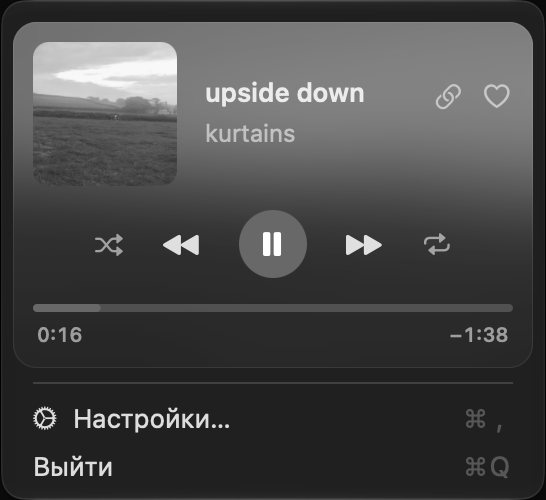

01
Ya.Music-RPC
Показывает трек из Яндекс Музыки в статусе Discord и добавляет мини-плеер в строку меню.
git clone github.com/relocpe/Ya.Music-RPC
Показывает трек из Яндекс Музыки в статусе Discord и добавляет мини-плеер в строку меню.
git clone github.com/relocpe/Ya.Music-RPC
Запускает zapret из строки меню macOS: Discord и YouTube без блокировок и без терминала.
форк · Flowseal/zapret-mac-discord-youtube
git clone github.com/relocpe/Nimbus